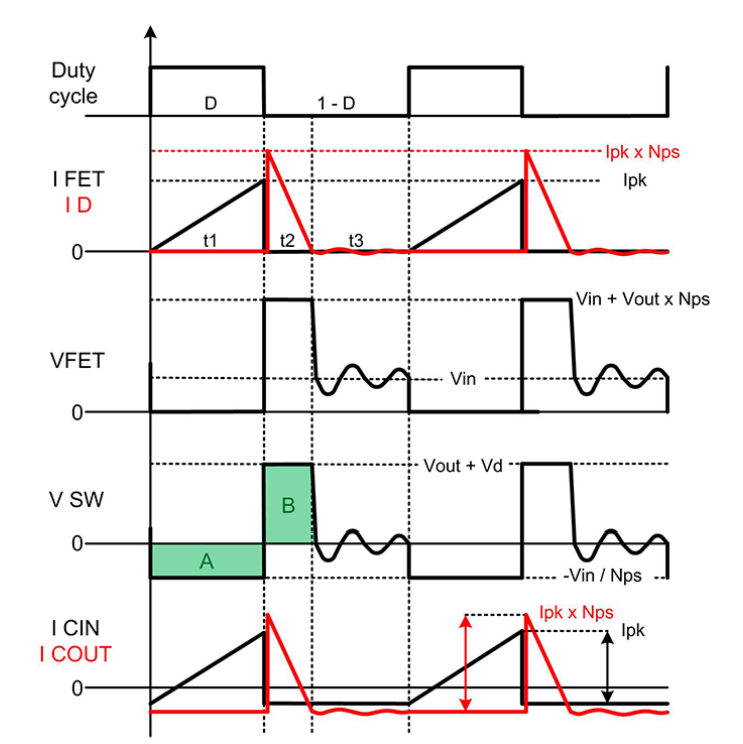
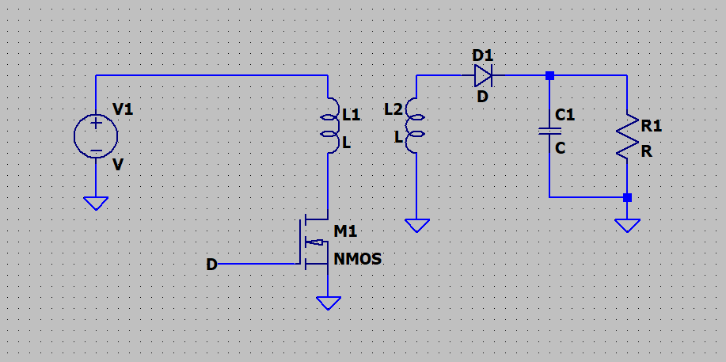
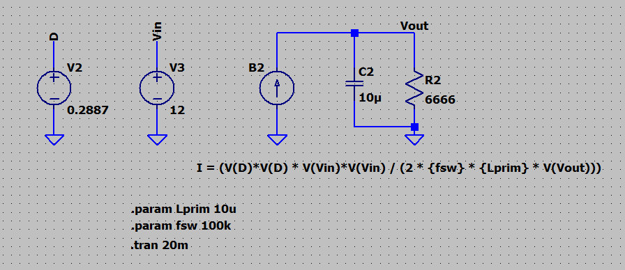
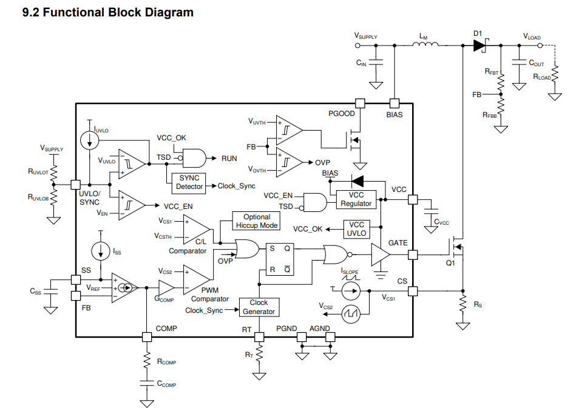
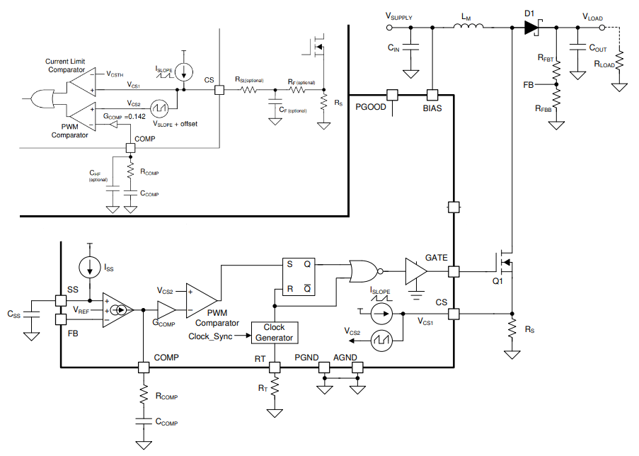
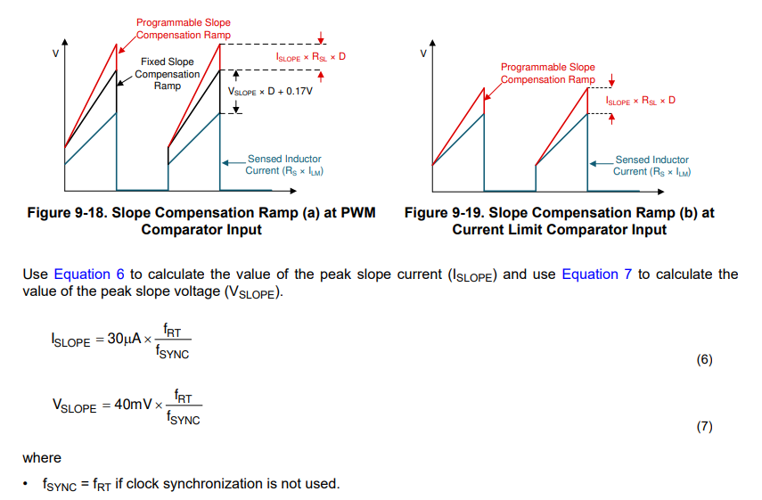
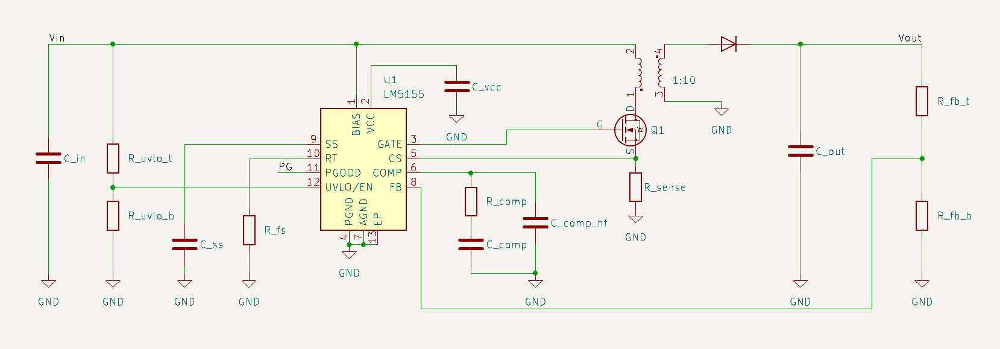

December, 2025
I wanted to make a flyback converter using the LM5155 for use as a nixie tube power supply. A boost converter would require duty cycles very close to 1 for a high input/output ratio, but a flyback can use a transformer with a large winding ratio to add an extra multiplier to the output voltage. Thus, it can produce high output voltages with a reasonable duty cycle.
I also (originally) thought it would be """fun""" to try to work out all the math for a switching power supply.
Requirements:
It might be unconventional to select a transformer first, but unlike something like a mains to 5V flyback or something, there aren't infinite options out there for a 200V flyback. Thus, I decided to select a transformer first and base some of the other parameters off the transformer.
I decided to use the Wurth Elektronik 750032052. The important characteristics are as follows.
Ideally to simplify the loop calculations, the converter should operate in either CCM or DCM and stay there, so we only need to do the calculations for one of them. For a nixie tube power supply, DCM is a better choice because it is the mode that a flyback converter would be in with low load, and nixie tubes don't typically need that much power, only a few watts at most. In addition, DCM allows more flexibility in the duty cycle requirement than CCM. This is important for a nixie tube driver, since the output voltage is very high compared to the input, and also, for me I found it difficult to find a suitable transformer with more than a 1:10 ratio of primary:secondary, and with a relatively small ratio and high output voltage, CCM would require a high duty cycle which may not be desirable.

These are the current and voltage waveforms of a DCM flyback converter. Note the secondary current drops completely to zero every cycle. We can use this diagram to derive most of the formulas for the operation of a flyback converter in DCM.
The convention for transformer winding ratio (n) I will use is as follows:
\( \frac{N1}{N2} = n = \frac{V_{prim}}{V_{sec}} = \frac{I_{sec}}{I_{prim}} \)
Since \( V_L = L \frac{dI}{dt} \),
slope \( = \frac{dI}{dt} = \frac{V_L}{L} \)
We can see that the peak current is the slope multiplied by the ON time of the switch.
\( I_{\text{pk, prim}} = t_1 \frac{V_{in}}{L_{prim}} \)
\( \boxed{I_{\text{pk, prim}} = \frac{D V_{in}}{f_{sw} L_{prim}}} \)
We can use energy conservation between the primary inductor and the energy dissipated in the load per switching cycle to find the duty cycle. It is known that the energy stored in an inductor is \( E = \frac{L I^2}{2} \), and assuming perfect efficiency and constant power output, the energy dissipated in the load per switching cycle, is \( \frac{P_{out}}{f_{sw}} \).
\( P_{out} = \frac{f_{sw} L {I_{\text{pk, prim}}}^2}{2} \) (Energy stored in primary coil multiplied by frequency)
\( I_{\text{pk, prim}} = \frac{D V_{in}}{f_{sw} L_{prim}} \)
\( P_{out} = \frac{f_{sw} L (\frac{D V_{in}}{f_{sw} L_{prim}})^2}{2} = \frac{f_{sw} L_{prim} D^2 V_{in}^2 }{2 f_{sw}^2 L_{prim}^2 } = \frac{D^2 V_{in}^2 }{2 f_{sw} L_{prim}} \)
\( P_{out} = V_o I_o \) (Assuming a constant output voltage/power from smoothing capacitor, etc)
And neglecting the imperfect efficiency of the converter,
\( P_{out} = \frac{D^2 V_{in}^2 }{2 f_{sw} L_{prim}} = V_o I_o \)
\( \boxed{D = \sqrt{\frac{2 V_o I_o f_{sw} L_{prim}}{V_{in}^2}}} \) (DCM)
First we should find the time \(t_2\) in the diagram. The converter will transition to CCM once \(t_2\) exceeds \( \frac{1 - D}{f_{sw}} \).
We can simply use the peak secondary current and the falling slope of the secondary current to solve for \(t_2\).
\( \text{slope} = \frac{V_o}{L_{sec}} \)
\( I_{\text{pk, sec}} = n I_{\text{pk, prim}} \)
And now we can use the slope and the max secondary current to find t2.
\( t_2 = \frac{I_{\text{pk, sec}}}{\text{slope}} = \frac{I_{\text{pk, sec}} L_{sec}}{V_o} = \frac{n I_{\text{pk, prim}} L_{sec}}{V_o} \)
And since we can relate the secondary and primary inductances with \( \frac{L1}{L2} = \frac{N1^2}{N2^2} \), \( L_{sec} = \frac{L_{prim}}{n^2} \)
\( t_2 = \frac{n I_{\text{pk, prim}} L_{prim}}{n^2 V_o} = \frac{I_{\text{pk, prim}} L_{prim}}{n V_o} \)
Plugging in for the peak primary current:
\( t_2 = \frac{D V_{in} L_{prim}}{n V_o f_{sw} L_{prim}} = \frac{D V_{in}}{n V_o f_{sw}} \)
Now, we can equate \(t_2\) and \(1-D\).
\( t_2 = \frac{D V_{in}}{n V_o f_{sw}} = \frac{1 - D}{f_{sw}} \)
\( \frac{D V_{in}}{n V_o } = 1 - D \)
\( D = \frac{n V_o}{V_{in} + n V_o} \)
And we can plug in D from before:
\( D = \frac{n V_o}{V_{in} + n V_o} = \sqrt{\frac{2 V_o I_o f_{sw} L_{prim}}{V_{in}^2}} \)
\( \frac{n^2 V_o^2}{(V_{in} + n V_o)^2} = \frac{2 V_o I_o f_{sw} L_{prim}}{V_{in}^2} \)
\( \boxed{I_{\text{out, crit}} = \frac{n^2 V_{in}^2 V_o}{2 f_{sw} L_{prim} (V_{in} + n V_o)^2}} \) (Maximum output current to stay in DCM)
Now that we have these three formulas, we can plug in some numbers to see what parameters work.
Now if we plug in the values, with a switching frequency of 100 kHz, we get \( I_{\text{out, crit}} = 141 \text{mA} \). A lower operating frequency results in a higher critical current and a lower duty cycle for a given output power. In general we want duty cycle to be lower rather than higher, and for a flyback with current mode control, it can be useful to keep the duty cycle below 50%. A lower frequency allows a higher output power while maintaining the 50% limit.
At 100 kHz, 141 mA is way more than the 30 mA requirement that I set originally. Limiting the duty cycle to 50% with 100 kHz fs and 12V input, the maximum current drops to 90 mA, which is still way more than 30 mA. Since I like the idea of having it be able to make more current output, I will change the target output current to 90 mA, which I can then derate later due to efficiency, etc.
At 90 mA output, 100 kHz fs, and 12V input, the duty cycle is 50% and the peak primary current is 6A. The WE 750032052 transformer that I plan to use has a primary saturation current of 10A +- 20%, so all is good.
I thought it would be a good idea to start with the hardest part. The LM5155 is a current mode controller that will drive the MOSFET gate which switches the primary current.
Current mode control is basically a way to control the output of a switching power supply by monitoring the inductor current constantly, and resetting the MOSFET gate to OFF once the inductor current hits a threshold. This current threshold is dynamically adjusted by a feedback voltage taken from a resistor divider from the converter's output voltage.
With this, there are basically two control loops. A fast inner loop monitors inductor current and controls the gate, while the outer, slower loop controls the inner loop's setpoint.
For the inner loop, stability issues may arise if the converter is in CCM and duty cycle is above 50%. In this case, external slope compensation would be required. In my case, I am not using CCM and the duty cycle is also below 50% so this is not required.
Now for the outer control loop, we can start by making a small signal, linearized model of the flyback converter. We can use the averaged switch model to turn the PWM and switching circuitry into a small signal AC model.

We can redraw the flyback converter into a model that doesn't have any switching.
The output current source has a current equivalent to the average current of the secondary winding. Taking the formula for \( P_{out} \) from previous calculations:
\( P_{out} = \frac{D^2 V_{in}^2 }{2 f_{sw} L_{prim}} \)
\( I_{out} = \frac{P_{out}}{V_o} = \frac{D^2 V_{in}^2 }{2 f_{sw} L_{prim} V_o} \)
I = (V(D)*V(D) * V(Vin)*V(Vin) / (2 * {fsw} * {Lprim} * V(Vout))) (for LTSpice)

Assuming a constant input voltage, this is what the small signal model becomes. Note the primary inductance is not included here. This is due to the fact that in DCM, the primary current drops completely to zero each switching cycle, which basically means that the inductor will not be able to "remember" anything between cycles, so we can just drop it from the model. In CCM, the current does not drop to zero, so in that case the inductor does need to be included in the model.
Here, the duty cycle to output transfer function is as follows:
\( G_{\text{flyback}}(s) = A_{\text{flyback}} \frac{R_L}{1 + s R_L C_o} \) where A is a constant.
Side note: I sometimes reuse variable letters without thinking, so if you see the same letter appear elsewhere that seemingly isn't related, it probably actually isn't related and I just unfortunately reused it.
\( A_{\text{flyback}} = I_{out} = \frac{D^2 V_{in}^2 }{2 f_{sw} L_{prim} V_o} \)
Note that in this case, \( V_o \) and \( V_{in} \) are assumed to be the constant design parameters.
\( G_{\text{flyback}}(s) = \frac{D^2 V_{in}^2 }{2 f_{sw} L_{prim} V_o} \frac{R_L}{1 + s R_L C_o} \) (Transfer function of output voltage / duty cycle)

This is the block diagram of the LM5155 switching controller. Most of the stuff here can be ignored since they doesn't contribute to the PWM duty cycle in normal operation. This includes the current limit comparator.

Note that the current limit comparator will force the gate low once its own output is high, which also means the comparators are active high. (Ofc since there is an OR gate, they must be active high to work).
From this, we can see that as the feedback comes in, it is first turned into a control current via the transconductance differential amplifier block. From the datasheet, the gain of this block is 2 mA/V.
We can write out the transfer function of the voltage at the COMP pin relative to the voltage coming into the FB pin.
\( H_{\text{comp}}(s) = \frac{V_{\text{comp}}}{V_{fb}} = 0.002 \frac{1 + s R_{\text{comp}} C_{\text{comp}}}{s^2 C_{\text{comp}} C_{hf} R_{\text{comp}} + s (C_{\text{comp}} + C_{hf})} \)
\( V_{\text{comp}} = H_{\text{comp}}(s) V_{fb} \)
Now to figure out how the PWM changes as a function of \( V_{\text{comp}} \).
We can find the duty cycle by equating \( V_{CS2} \) and \( V_{\text{comp}} G_{\text{comp}} \). Since this is when the PWM resets, the current at this time will be the same \( I_{pk} \) from before. And also because of that, the elapsed time in the switching cycle will be equal to \( \frac{D}{f_{sw}} \).
\( V_{CS}(t) = I_{\text{prim}}(t) R_s \)
\( V_{CS} = I_{\text{pk, prim}} R_s \)
Since the LM5155 includes a slope compensation circuit by default, we need to calculate the voltage that actually gets to the PWM comparator.

From the diagram, it is shown that the fixed slope compensation will add a constant 0.17V to the sensed voltage, as well as 40 mV scaled by the percent of the clock cycle that has elapsed. In this case the "percent of the clock cycle that has elapsed" is the same as the duty cycle.
\( V_{CS2} = V_{CS} + 0.17 + 0.040 D \)
\( V_{CS2} = I_{\text{pk, prim}} R_s + 0.17 + 0.040 D \)
\( V_{CS2} = \frac{D V_{in}}{f_{sw} L_{prim}} R_s + 0.17 + 0.040 D \)
Now setting the two things equal: \( (G_{\text{comp}} = 0.142) \)
\( V_{CS2} = \frac{R_s D V_{in}}{f_{sw} L_{prim}} + 0.17 + 0.040 D = 0.142 V_{\text{comp}} \)
\( D = \frac{0.142 V_{\text{comp}} - 0.17}{\frac{R_s V_{in}}{f_{sw} L_{\text{prim}}} + 0.040} \)
\( D(V_{fb}) = \frac{0.142 V_{fb} H_{\text{comp}}(s) - 0.17}{\frac{R_s V_{in}}{f_{sw} L_{\text{prim}}} + 0.040} \)
And to make it look cleaner for now we can give names to some of those terms that are constant relative to \( V_{fb} \).
\( A = 0.142 H_{\text{comp}}(s) \)
\( K = \frac{R_s V_{in}}{f_{sw} L_{\text{prim}}} \)
\( D(V_{fb}) = \frac{A V_{fb} - 0.17}{K + 0.040} \)
Now since theres that -0.17 term, we have to linearize the function with respect to Vfb.
\( L(x) = f(a) + f'(a)(x - a) \)
\( D'(V_{fb}) = \frac{A}{K+0.040} \)
\( D_{lin}(V_{fb0}, \hat{v}_{fb}) = D(V_{fb0}) + \frac{A}{K+0.040} (\hat{v}_{fb} - V_{fb0}) \)
And for small signal AC analysis we can remove the terms that are constant with \( \hat{v}_{fb} \)
\( \hat{d}(\hat{v}_{fb}) = \frac{A}{K+0.040} \hat{v}_{fb} \)
Then for no particular reason we can give it a different name
\( C_{\text{LM5155}}(s) = \frac{\hat{d}}{\hat{v}_{fb}} = \frac{A}{K+0.040} = \frac{0.142 H_{\text{comp}}(s) }{\frac{R_s V_{in}}{f_{sw} L_{\text{prim}}} + 0.040} \)
\( C_{\text{LM5155}}(s) = \frac{(0.142) (0.002) \frac{1 + s R_{\text{comp}} C_{\text{comp}}}{s^2 C_{\text{comp}} C_{hf} R_{\text{comp}} + s (C_{\text{comp}} + C_{hf})} }{\frac{R_s V_{in}}{f_{sw} L_{\text{prim}}} + 0.040} \)
\( C_{\text{LM5155}}(s) = \frac{(0.142) (0.002)(1 + s R_{\text{comp}}) C_{\text{comp}}} {(s^2 C_{\text{comp}} C_{hf} R_{\text{comp}} + s (C_{\text{comp}} + C_{hf})) (\frac{R_s V_{in}}{f_{sw} L_{\text{prim}}} + 0.040)} \)
This one just refers to the resistor divider that samples the output voltage and sends a scaled version into the FB pin.
\( H_{fb} = \frac{R_{fbb}}{R_{fbb} R_{fbt}} \)
We can just take all the blocks in the loop and multiply them together since they are all linearized.
\( L_{\text{total}}(s) = G_{\text{flyback}}(s) H_{fb} C_{\text{LM5155}}(s) \) (Open loop transfer function of the whole flyback converter)
\( \boxed{L_{\text{total}}(s) = (\frac{D^2 V_{in}^2 }{2 f_{sw} L_{prim} V_o} )(\frac{R_L}{1 + s R_L C_o}) (\frac{R_{fbb}}{R_{fbb} R_{fbt}}) (\frac{(0.142) (0.002)(1 + s R_{\text{comp}}) C_{\text{comp}}} {(s^2 C_{\text{comp}} C_{hf} R_{\text{comp}} + s (C_{\text{comp}} + C_{hf})) (\frac{R_s V_{in}}{f_{sw} L_{\text{prim}}} + 0.040)})} \) (DCM flyback converter)
And now, we need to find the other components to then be able to plug back into here, and find compensation RC values that produce a good phase margin and transient response. The other stuff should be much simpler than this...
